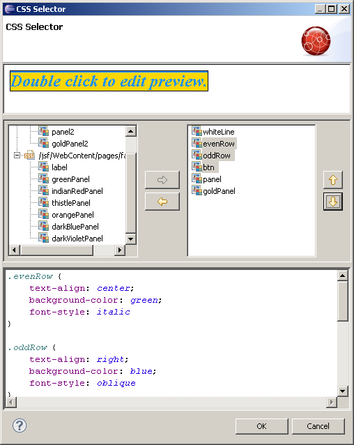
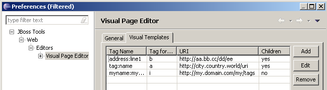
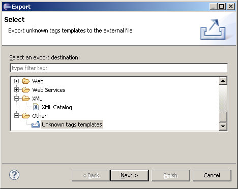
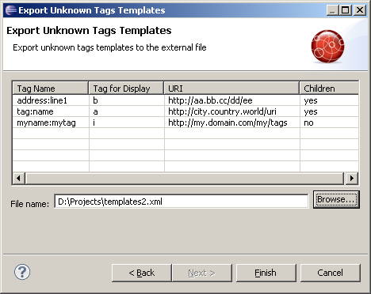
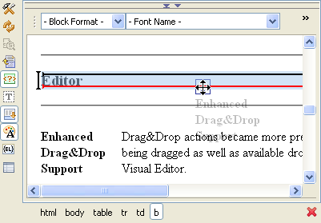
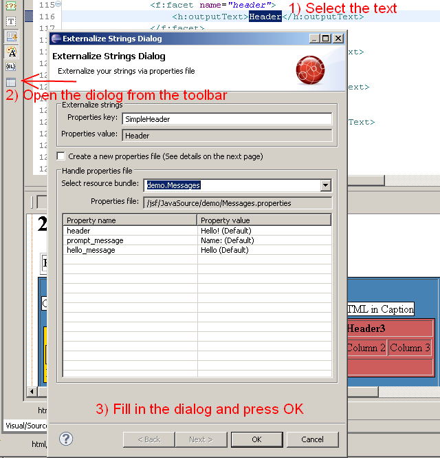
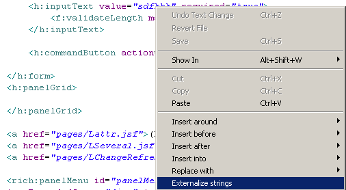
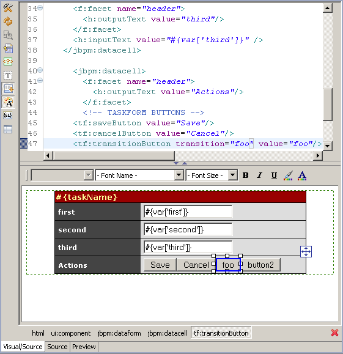

General |
|
| Quick Fixes for JSF Composite components |
There is now quick fixes to easily create and edit composite components while editing JSF 2 documents.
|
|
|
|
| CSS Selector dialog updates |
The CSS Dialog now allow multiple classes to be selected and moved between the two columns via either the arrow buttons, keyboard or drag'n'drop. In addition you can change the order of selected classes by moving them up and down.  |
| Import/Export for VPE visual templates |
VPE visual templates for custom tags can now be exported and from a file 
This allows you to share templates between team members. 
 |
Editor |
|
| Enhanced Drag&Drop Support | Drag & Drop in the Visual page editor
is now more reliable and easier. The drop indicator will now be shown in
all drop locations available.
 |
|
|
|
| Externalize Strings Dialog |
There is now and Externalize String Dialog for JSF/XHTML pages. Text strings will now be externalized to a resource bundle and the expression will be rendered via an EL expression. Allowing for easier i18n. 
The dialog is available from the VPE toolbar or from the context menu.  |
Templates |
|
| New templates for JBPM | Visual Page Editor now supports jBPM
3 tags
such as jbpm:dataform, jbpm:datacell, tf:cancelButton,
tf:saveButton; tf:transitionButton
 |
|
|
|